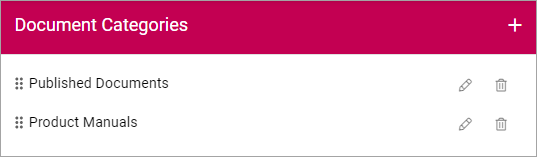
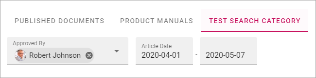
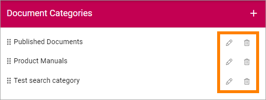

Document Picker settings¶
Here you set up categories for the Document Picker. Each category is then available as a tab in the Documewnt Picker.
An example:
These categories:
Are available this way in the picker:

Note that if a document library is set up for the Publishing App, this document library becomes the default tab in the Document Picker. For more information see: Publishing Apps
Create a new category¶
To create a new category, do the following:
- Click the plus.
- Use the following settings:

- Title: You can adda a title for the caterogory in any or all avaailable languages. Default language is mandatory.
- Sharepoint Library/Search category: A Document Picker category can either be a Sharepoint library or a search category. Select what you will create here.
- Share point Library Url: If you selected “Sharepoint Library” above, add the Url to the library here.
- Search Categories: If you selected “Search category” above, use this list to select search category. The search categories are set up for the Business Profile, see: Search settings
- Allow user to upload document: If you create a category for a Sharepoint library you can allow uppload to this libary in the Document Picker, by selecting this option.
- Add Filter: If you are using a Search Category you can add filters to allow the users to filter the list in the Document Picker, see below for an example.
- Click “Save” when you’re finished, to create the Document Picker category.
The following filter settings:

Is displayed this way in the Document Picker:
Edir or remove Document Picker categories¶
Use the pen to edit a category and the dust bin to delete it.
A deleted Document category is removed from the Document Picker immidiately.